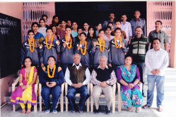
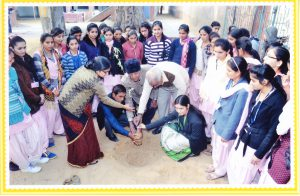
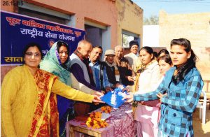
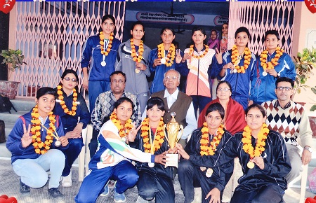
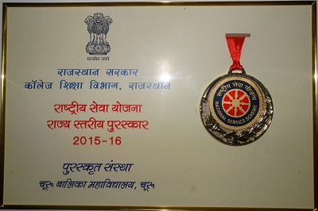
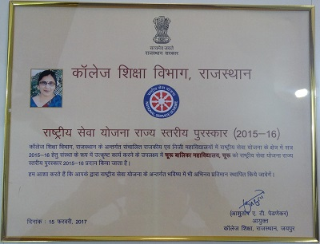
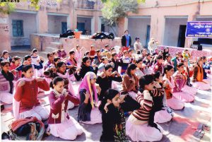
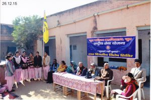
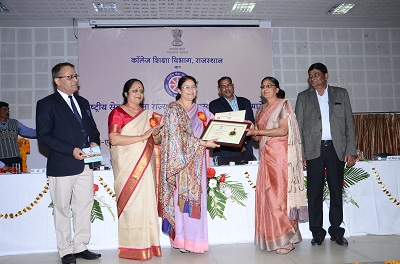

EXTRA CURRICULAR ACTIVITIES
OTHER EXTRA CURRICULAR ACTIVITIES
|  | 1. GAMES: – The college has employed an active physical instructor, Who is regularly coaching the student in games, sports with specializations in athletics. In the inter college tournaments organised by the University the students of this college have set up a land mark in certain athletics events by getting Gold, Silver, and bronze Medals in the past. This year in the events of Cross Country Race organized by MGS University a student of this college has got First position. “ Championship of this event hasalso been awarded to this college” |
|    | 2. NSS :-The NSS motto expresses the essence of democratic living and upholds the need for service, It is the aim of the NSS to demonstrate its motto. The motto is “ NOT ME, NOT YOU BUT WE”. The programme aims to inculcate social welfare in students, and to provide service to society without bias. NSS volunteers work to ensure that everyone who is needy gets help to enhance their standard of living and lead a life of dignity. In our college NSS was started with two units from the year 1990 and thereafter this activity is regularly been functioning. In its regular activities camps are held annually, funded by the Government of India, and are usually located in a rural village or a backward city suburb. Volunteers are involved in such activities as · Cleaning · Education to Adults / Environmental Conditions · Creating awareness of issues such as social evils and problems, Education, Health care and Right to vote etc. · Inviting Doctor forhealth camp Blood donation · Basic knowledge of Tailoring wearing etc. are given to the ladies of Basti. · Camps Lashing for a week and for shorter periods are also conducted. |
{kind=link}
{kind=link}
{kind=link}
{kind=link}
{kind=link}